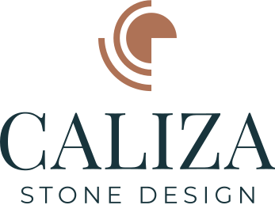
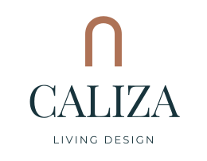
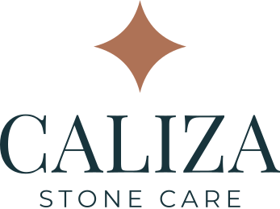

Marca madreDescargar SVG
Marca madreDescargar SVGIdentidad visual · Opción 08 — Warm Mediterranean
La materia toma forma.
Sistema de identidad parametrizado para CALIZA GROUP y sus tres líneas de negocio. Cada composición tiene su propio SVG escalable; el sitio no vuelve a reconstruir letras ni símbolos mediante estilos.
Manual rector · Paquete aprobado por CALIZA · Versión parametrizada
Las cuatro marcas
Marca madreDescargar SVG
Crear · Stone DesignDescargar SVG
Habitar · Living DesignDescargar SVG
Preservar · Stone CareDescargar SVGVariantes de reproducción
 Inversa · fondo oscuro
Inversa · fondo oscuro


Paleta
Marine Ink #18343C
Terracotta #AE7256
Sand #CEB99B
Limewash #F2EADC
Tipografía
Aa · Playfair
Playfair Display Regular (400). Titulares, composición editorial y contornos de logotipo.
Aa · Montserrat
Montserrat Regular / Medium. Lectura, navegación, etiquetas y descriptores.
Reglas de uso
Respetar proporciones
Conservar el viewBox individual de cada archivo, sin estirar, recortar ni reconstruir el logo con HTML. Mínimo: 96 px de ancho para Group y 72 px para cada división.
Dar espacio
Reservar un área de exclusión de al menos una altura completa de letra capital alrededor del lockup, libre de textos y gráficos.
Elegir la variante
Principal sobre Limewash y fondos claros; inversa sobre Marine Ink. No aplicar filtros ni recolorear en CSS. Los símbolos son archivos independientes.
Interfaz digital
Acción principal
Botones rectangulares de 44 px de alto, Marine Ink con texto Limewash y Montserrat Medium 12 px en mayúsculas. Terracotta es acento gráfico, no fondo de botón con texto blanco.
Dos temas
Limewash como superficie principal y Marine Ink para la versión oscura. Los colores semánticos se declaran en el archivo de tokens del sistema rector.
Tipografía local
Playfair Display para titulares editoriales; Montserrat para navegación, textos y acciones. Los ocho archivos WOFF2 viven con los activos del sitio.